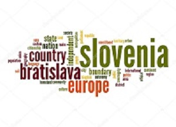

Bled

Introdução
Localização
Multimédia
Informação
Comentarios
Quizz
Home
Introdução
Bled é um município da Eslovênia.
A sede do município fica na localidade de mesmo nome. Situado no noroeste da Eslovénia,
é um dos principais destinos turísticos deste país, sendo conhecido sobretudo pela beleza
do Lago Bled, em cujo centro situa-se a única ilha natural e em cujas margens se encontra
o mais antigo castelo do país. Na cidade encontra-se o principal centro de informações sobre
o Parque Nacional de Triglav.Uma importante instituição de ensino na área de administração e
turismo existe desde fevereiro de 1986 em Bled: IEDC - Bled School of Management.
⚓⚡⛅🏞
Bled é uma cidade com clima bastante diversificado
tanto está sol como de repente começa a chover torrencialmente e a trovejar.
É também uma cidade com grandes atrações naturais como as suas montanhas e como é
óbvio o seu lago onde também se faz passeios de barco.
Bled é uma cidade com clima bastante diversificado,
tanto está sol como de repente começa a chover torrencialmente e a trovejar.
É também uma cidade com grandes atrações naturais como as suas montanhas e como é
óbvio o seu lago onde também se faz passeios de barco.
Bled
Natureza
Clima
